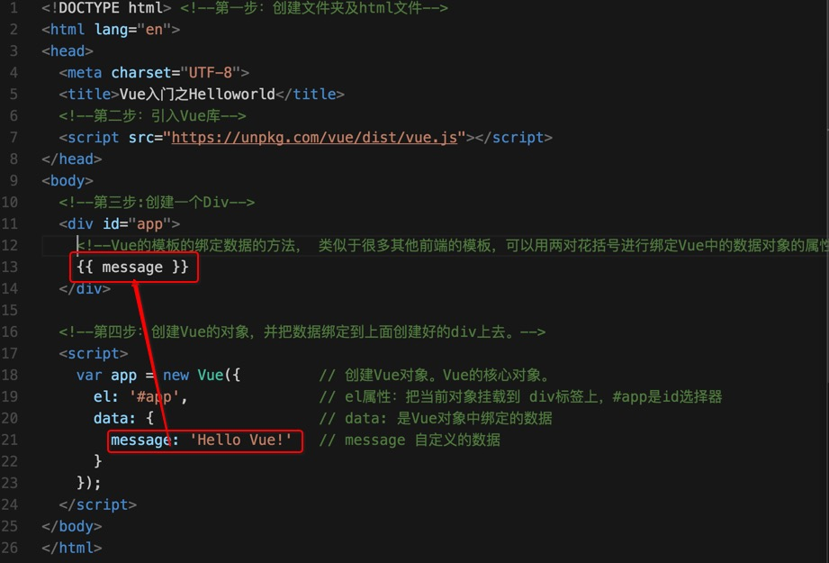

Vue入门之概念及Helloworld
Vue简介
Vue是一个前端的双向绑定类的框架，发音[读音 /vjuː/, 类似于 view]。新的Vue版本参考了React的部分设计，当然也有自己独特的地方，比如Vue的单文件组件开发方式都很有创新，另外Vue自身的一些绑定的语法、用法等都非常精炼，很容易上手，而且第三方的插件都非常丰富，社区非常活跃，最新的文档都有中文版本。而且Vue配合官方的和第三方的库可以实现单文件的组件化开发、SPA等现代化前端开发。
详情请参考Vue官网
Vue的入门demo
Vue 可以直接把它当做一个js库使用，所以它可以很容易的接入到你的项目或者单个页面中。甚至你可以只使用它的双向绑定功能。所以它很容易上手。
比如：我们有一个需求，一个网页上一个Div标签，我们有一个json对象存储数据，把json对象上的数据放到Div上去。
接下来是步骤：
第一步： 创建一个文件夹并创建一个html文件 比如：index.html.
当如你可以选择你自己的编辑器，我就用VSCode。
第二步：引入Vue库
<script src="https://unpkg.com/vue/dist/vue.js"></script>
当然了你可以直接下载Vue的js文件，推荐你直接用上面的cdn即可。
第三步：创建一个Div，给它一个id，比如：app
第四步：创建Vue的对象，并把数据绑定到上面创建好的div上去。
最终的代码如下：
<!DOCTYPE html> <!--第一步：创建文件夹及html文件-->
<html lang="en">
<head>
<meta charset="UTF-8">
<title>Vue入门之Helloworld</title>
<!--第二步：引入Vue库-->
<script src="https://unpkg.com/vue/dist/vue.js"></script>
</head>
<body>
<!--第三步:创建一个Div-->
<div id="app">
<!--Vue的模板的绑定数据的方法， 类似于很多其他前端的模板，可以用两对花括号进行绑定Vue中的数据对象的属性 -->
{{ message }}
</div>
<!--第四步：创建Vue的对象，并把数据绑定到上面创建好的div上去。-->
<script>
var app = new Vue({ // 创建Vue对象。Vue的核心对象。
el: '#app', // el属性：把当前Vue对象挂载到 div标签上，#app是id选择器
data: { // data: 是Vue对象中绑定的数据
message: 'Hello Vue!' // message 自定义的数据
}
});
</script>
</body>
</html>
最终的结果就是：
Hello Vue!
Vue的Helloworld总结
- Vue构造函数的：选项el属性，就是element缩写，当前Vue对象挂载到哪个标签上的语法，支持CSS选择器或者dom对象，一般用id选择器选择当前页面的标签。
- Vue的选项：data属性是自定义数据。这里我们只是演示了一个message属性，vue会把自定义的数据可以与html的模板数据进行绑定。
- Vue 数据绑定的方式就是用
{{}}，类似于handlebars. - 上面这个demo就是演示了Vue的绑定数据的基本模型。注意点，标签先创建好了之后，再创建Vue对象，具体你应该懂吧。
